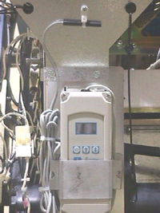

Operating Documentation
Direction 5114045-800, Rev# 10
LightSpeed 4.X Service Information (Advanced)
Operating Documentation |
| Required Persons | Preliminary Reqs | Procedure | Finalization |
|---|---|---|---|
| 1 |
The gantry thermostat is a self contained Electronic Thermostat Control Unit.
See Illustration 1 for location of the gantry thermostat.
Illustration 1: Gantry Temperature Fan Control Thermostat

| Potential for artifacts. This is not a recording device. Failure to use the correct settings can result in artifacts due to incorrect detector temperature deltas. | |
Press the <SET> key once to access the Fahrenheit/Celsius mode. The display will show the current status., either F for degrees or C for degrees Celsius. Then press either the <UP> or <DOWN> arrow keys to toggle between the F or C designation.
Press the <SET> key again to access the setpoint. The LCD will display the current setpoint and S1 annunciator will be blinking to indicate that the control is in the setpoint mode. Press either <UP> or <DOWN> arrow keys to adjust the setpoint to the desired temperature.
Press the <SE>t key again to access the differential. The LCD will display the current differential and the DIF 1 annunciator be blinking to indicate that the control is in the differential mode. Press either <UP> or <DOWN> arrow keys to adjust the differential setting.
Press the <SET> key again to access the cooling or heating mode. The LCD will display the current mode either C1 for cooling or H1 for heating. Press either <UP> or <DOWN> arrow keys to toggle the setting.
Press the <SET> key and programming is complete.
Table 1: Thermostat Settings
| STEP | DESCRIPTION | GE DISPLAY SETTING |
|---|---|---|
| 1 | Fahrenheit or Celsius | C |
| 2 | Setpoint Temperature | 26 |
| 3 | Differential Temperature | 2 |
| 4 | Cooling or Heating Mode | C1 |
Comment: The Electronic Thermostat Control will automatically end programming if no key has been pressed for a period of 30 seconds. Any settings that have been input to the control will be accepted at that point.
All control settings are retained in non-volatile memory, if power to the Electronic Thermostat Control is interrupted for any reason. Re-programming is not necessary after power outages or disconnects unless different control settings are required.
The Electronic Thermostat Control is provided with a lockout switch to prevent tampering by unauthorized personnel. When placed in the lock position, the keypad is disabled and no changes can be made. When placed in the unlock position, the keypad will function normally.
To access the lockout switch, disconnect the power supply and open the control. The switch is located on the inside cover about 50.8 mm above the bottom. To disable the keypad, slide the <SWITCH> to the left lock position. To enable the keypad, slide the <SWITCH> to the right unlock position. All Electronic Thermostat Controls are shipped with this switch in the unlock position. The settings shown in Table 1 are programmed at the factory during system staging.
No finalization required.